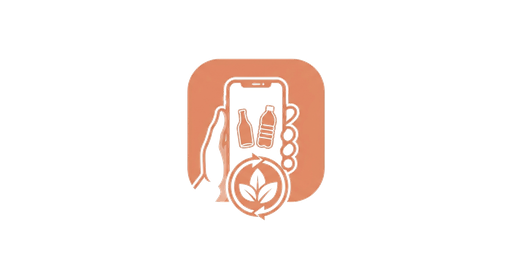

CLASIFICADOR INTELIGENTE DE RESIDUOS
¿Dónde tiro este residuo?
Sacá una foto o elegí una imagen. EcoScan analizará el residuo y te ayudará a identificar su categoría.
1
Elegí una imagen
Usá una foto clara y tratá de mostrar un solo objeto.

La imagen aparecerá acá
2
Resultado
La predicción del modelo aparecerá en este sector.
Categoría detectada
—
Cómo separar este residuo
Subí una foto y tocá “Analizar foto”.